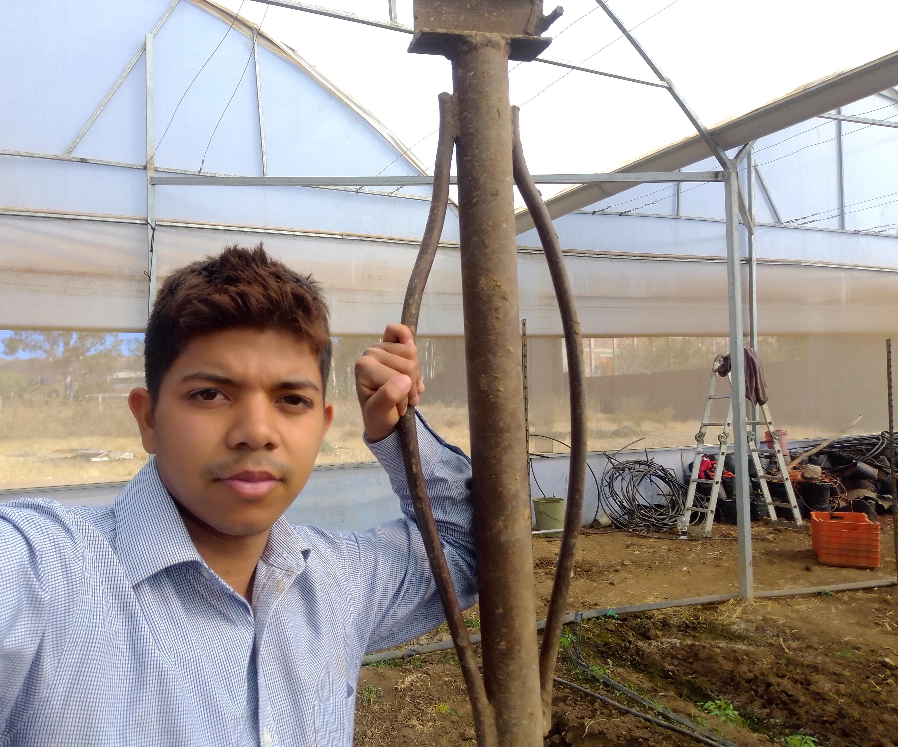
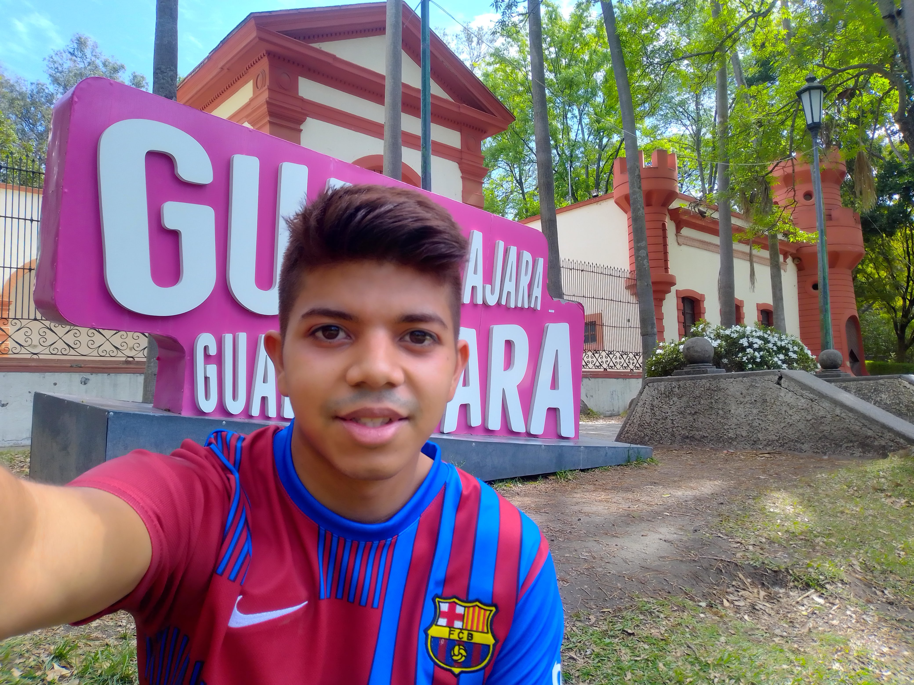

Oct/2022 Era temprano y el día se veía muy bien. Había una cool formación de nubes. Estaba en mi departamento en San Ignacio, Jal. y salí a ver el pueblo un momento
Trabajé en un rancho en el municipio de Acatic, Jal. Era encargado de operaciones. Ese día estaba enterrando estacas en un invernadero de jitomate para sostener las plantas.

Viví aproximadamente dos meses en Guadalajara. Estaba aprendiendo a programar y me gustaba mucho mi estilo de vida, conocí personas geniales y me divertía mucho. Fue la única vez que me pinté el pelo, me pareció una buena mejora estética.
A veces iba a correr al bosque Los Colomos.
Planeé con mi ex-roommate de GDL Paul un fin de semana para visitar su pueblo Ixtlahuacán de los Membrillos.
La noche anterior a la foto había sido la feria del membrillo. Al día siguiente visitamos otros pueblos y terminamos el paseo en el acuario Michin en GDL, al parecer es el acuario más grande del país. Fue un fin de semana genial.